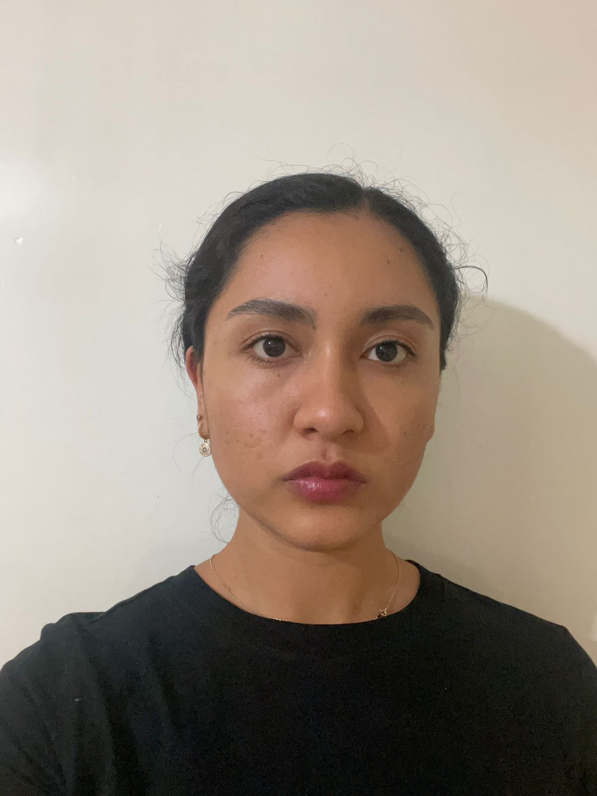

Karla Marin

Summary
I am mechatronic engineer and now I am dedicated in software development and technology information skills
Education
Mechatronic Engineer - University Technological of the Mixteca (2016-2021)
Work Experience
Data Engineer - Tata Consultancy Server
February 2021 - Now
- Helped customers when they need special attention with incidents or tickets
- Monitored 24/7 applications from FIS bank, located in Ohio, USA
- Maintained customers and product owner records and daily updates regarding this apps
Skills
- Customer service: 10/10
- Organizational skills: 9/10
- Monitor of main applications: 10/10
Awards and certifications
- Scrum Foundation - CertiProf (December 2022)
Other
My Hobbies
Contact me